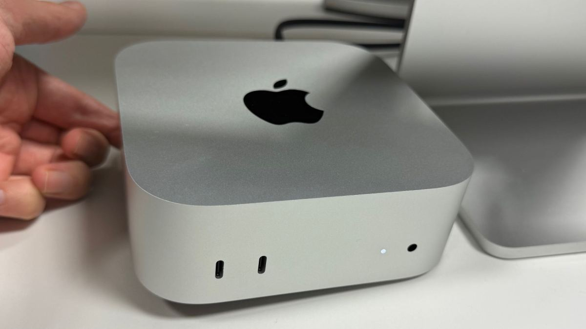

Le Mac mini M4 à 699 € est enfin de retour sur Amazon (mais vous pourriez le recevoir après le M5)

🛒 En lien avec cet article
Publicité — Liens de partenariat Amazon : une commission peut être reversée, sans surcoût pour vous.
🔥 Top produits tech du moment
Publicité — Liens de partenariat Amazon : une commission peut être reversée, sans surcoût pour vous.
Les géants de la tech concentrent une part croissante de l'innovation mondiale. Leurs annonces ont un impact direct sur les utilisateurs, les développeurs et l'ensemble du secteur.
Ce qu'il faut retenir
[Deal du jour] Depuis la hausse généralisée des prix d’Apple fin juin, le Mac mini M4 d’entrée de gamme avait disparu à 699 €.
Amazon rouvre les commandes à ce tarif, contre 949 € sur l’Apple Store, même si sa disponibilité reste encore toute relative.
Pourquoi c'est important
Cette information conforte la position des grands groupes de la tech dans l'économie mondiale. Elle concerne directement les utilisateurs de technologies numériques et mérite d'être suivie de près dans les prochaines semaines. Le Mac mini M4 à 699 € est enfin de retour sur Amazon (mais vous pourriez le recevoir après le M5) est ainsi un signal à prendre en compte pour comprendre les évolutions du secteur.
En résumé
Retenez l'essentiel : Le Mac mini M4 à 699 € est enfin de retour sur Amazon (mais vous pourriez le recevoir après le M5). Cette actualité a été rapportée par Numerama. Nous continuerons de suivre ce sujet et de vous tenir informés des prochaines évolutions.
🚀 Vous êtes freelance tech ?
Calculez votre TJM en 30 secondes : micro-entreprise, SASU, EURL ou portage salarial. Gratuit, taux 2025.
Calculer mon TJM →Source : Numerama